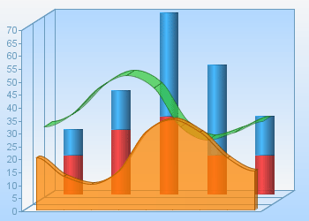

5. 3D Overlay Chart
Here is a 3D overlay chart. It is crated by setting 3D base line chart or bar chart with "barType" parameter set to "behind".
The overlay charts can be either 2D or 3D. The last added overlay chart is displayed in front of the chart grid while the
previous ones are pushed towards the back side of the grid in the order they were added.
Applet:
<applet code=com.objectplanet.chart.ChartApplet
archive=chart.jar width=350 height=250>
<param name=chart value="bar">
<param name="sampleValues_0" value="4,2,6,12,15,14,24,32,32,44,37,64,
59,47,62,73,60,44,61,75,58">
<param name="seriesRange_0" value="2">
<param name="sampleLabels" value="jul 1999,aug 1999,sep 1999,oct 1999,nov 1999,
dec 1999,jan 2000,feb 2000,mar 2000,apr 2000,may 2000,jun 2000,jul 2000,
aug 2000,sep 2000,oct 2000,nov 2000,dec 2000,jan 2001,feb 2001,mar 2001">
<param name="sampleColors" value="blue, red">
<param name="valueLabelsOn" value="true">
<param name="valueLabelStyle" value="inside">
<param name="barLabelsOn" value="true">
<param name="barLabelAngle" value="270">
<param name="valueLinesOn" value="true">
<param name="chartTitle" value="Bike Sales">
<param name="legendOn" value="true">
<param name="legendPosition" value="top">
<param name="legendLabels" value="Count,Sales">
<param name="rangeOn_2" value="true">
<param name="rangeStep" value="1000">
<param name="rangeStep_2" value="10">
<param name="rangePosition" value="right">
<param name="rangePosition_2" value="left">
<param name="rangeAxisLabel" value="US Dollars">
<param name="rangeAxisLabelFont" value="Verdana, bold, 16">
<param name="rangeAxisLabelAngle" value="90">
<param name="rangeAxisLabel_2" value="Number of sales">
<param name="rangeAxisLabelAngle_2" value="270">
<param name="rangeLabelPrefix" value="$">
<param name="multiSeriesOn" value="true">
<param name="barWidth" value="0.6">
<param name="barOutlineOff" value="true">
<param name="overlay" value="line">
<param name="overlay_seriesCount" value="2">
<param name="overlay_sampleValues_1" value="1247,648,1794,2238,3185,3997,4176,9247,
8465,14982,12263,21847,23515,18344,20765,25047,18616,16327,19746,22547,11074">
<param name="overlay_sampleColors" value="red">
<param name="overlay_valueLabelsOn" value="true">
<param name="overlay_sampleHighlightOn" value="true">
<param name="overlay_sampleHighlightStyle" value="circle_opaque">
<param name="overlay_lineWidth" value="4">
</applet>
Servlet:
<img src="http://localhost:8080/servlet/com.objectplanet.chart.ChartServlet?
width=350&
height=250&
seriesCount=3&
sampleCount=11&
range=70&
barType=behind&
3DModeOn=true&
3DDepth=30&
overlay0=bar&
overlay0_sampleValues_0=15,25,30,15,15&
overlay0_sampleValues_1=10,15,40,35,15&
overlay0_seriesCount=2&
overlay0_sampleColors=%23dc2626df,%23267ec2df&
overlay0_barType=stacked&
overlay0_barShape=cylinder&
overlay1=spline&
overlay1_3DModeOn=true&
overlay1_sampleValues_0=30,35,45,50,45,30,25,28,32&
overlay1_sampleColors=%2335CE35af&
overlay1_line3DDepth=0.8&
overlay2=spline&
overlay2_3DModeOn=true&
overlay2_sampleValues_0=20,13,10,15,30,35,30,20,15&
overlay2_sampleColors=%23FE8500bb&
overlay2_stackedOn=true&
overlay2_line3DDepth=0.3&
chartBackground=%23B2D8FF|%23F5F6F7&
background=%23F5F6F7|%23B2D8FF&
chartForeground=%236a9bbd">
Java:
import com.objectplanet.chart.*;
import com.objectplanet.chart.ext.SplineChart;
import java.awt.*;
public class Overlay {
public static void main(String[] argv) {
BarChart chart = new BarChart();
chart.setSeriesCount(3);
chart.setSampleCount(11);
chart.setRange(0, 70);
chart.setBarType(BarChart.BEHIND_BARS);
chart.set3DModeOn(true);
chart.set3DDepth(30);
BarChart overlay0 = new BarChart(5);
overlay0.setSeriesCount(2);
overlay0.setSampleValues(0, new double[] {15,25,30,15,15});
overlay0.setSampleValues(1, new double[] {10,15,40,35,15});
overlay0.setSampleColors(new Color[] {new Color(0xdc, 0x26, 0x26, 0xdf), new Color(0x26, 0x7e, 0xc2, 0xdf)});
overlay0.setBarType(BarChart.STACKED_BARS);
overlay0.setBarShape(BarChart.CYLINDER);
chart.addOverlayChart(overlay0);
SplineChart overlay1 = new SplineChart();
overlay1.setSampleCount(9);
overlay1.set3DModeOn(true);
overlay1.setSampleValues(0, new double[] {30,35,45,50,45,30,25,28,32});
overlay1.setSampleColors(new Color[] {new Color(0x35, 0xCE, 0x35, 0xaf)});
overlay1.setLine3DDepth(-1, 0.8);
chart.addOverlayChart(overlay1);
SplineChart overlay2 = new SplineChart();
overlay2.setSampleCount(9);
overlay2.set3DModeOn(true);
overlay2.setSampleValues(0, new double[] {20,13,10,15,30,35,30,20,15});
overlay2.setSampleColors(new Color[] {new Color(0xfe, 0x85, 0x00, 0xbb)});
overlay2.setStackedOn(true);
overlay2.setLine3DDepth(-1, 0.3);
chart.addOverlayChart(overlay2);
chart.setChartBackground(new Color(0xb2, 0xd8, 0xff));
chart.setChartBackground2(new Color(0xf5, 0xf6, 0xf7));
chart.setBackground(new Color(0xf5, 0xf6, 0xf7));
chart.setBackground2(new Color(0xb2, 0xd8, 0xff));
chart.setChartForeground(new Color(0x6a, 0x9b, 0xbd));
com.objectplanet.chart.NonFlickerPanel p = new com.objectplanet.chart.NonFlickerPanel(new BorderLayout());
p.add("Center", chart);
Frame f = new Frame();
f.add("Center", p);
f.setSize(350,250);
f.show();
}
}
